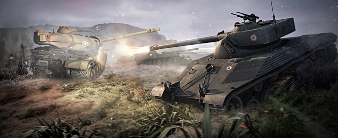
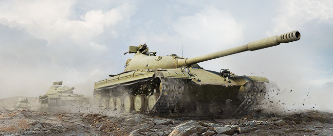
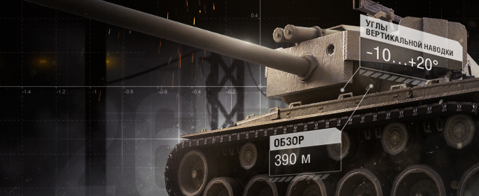
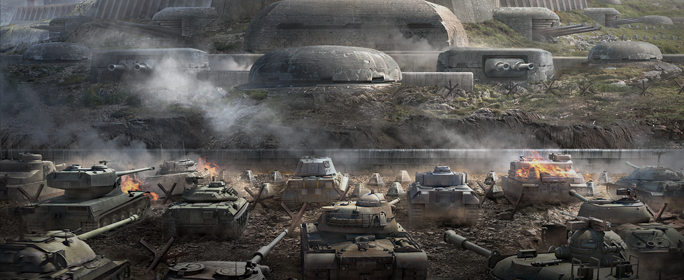

Всем привет! Сегодня (28.08.14) разработчики поделились информацией о предстоящем патче:
Сегодня на супертест уйдет версия 9.3, в которой ключевыми элементами будут являться новые
высокоуровневые легкие танки, новый функционал Укрепрайонов, с долгожданными наемниками, ну
и конечно элементы оптимизации и улучшения производительности. К слову, за лето был сделан
большой шаг в этом направлении и по сравнению с версией 9.0, по разным подсчетам,
производительность улучшена на 15-20%.
Читать далее
Все еще может измениться, но это то, что есть сейчас на супертесте:
- Всем легким танкам (кроме Type 62) подняли прочность подвески на 10%(10-20 хп);
- Jagdpanther 88mm L/56 УГН уменьшен с 8 до 5;
- Стоимость ремонта VK3601 уменьшен на 25%;
- Birch gun 25pdr убрали;
- Американскую ПТ T49 переименовали в T67;
- Стоимость орудия T185, используемого на T71 легком танке и T69 среднем танке увеличили (63k до 73k серебра)
Читать далее

Совсем непопулярный средний танк 10 уровня получил неплохой Апп своих характеристик, а именно:
- Скорострельность поднимут до 9.7 и у него будет самый высокий ДПМ среди всех ст10!
- Апнут немного стабилизацию, но ухудшат точность.
- Скорострельность поднимут до 9.7 и у него будет самый высокий ДПМ среди всех ст10!
Читать далее

Всем привет! Сегодня (28.08.14) разработчики поделились информацией о предстоящем патче:
Сегодня на супертест уйдет версия 9.3, в которой ключевыми элементами будут являться новые
высокоуровневые легкие танки, новый функционал Укрепрайонов, с долгожданными наемниками,
ну и конечно элементы оптимизации и улучшения производительности. К слову, за лето был сделан
большой шаг в этом направлении и по сравнению с версией 9.0, по разным подсчетам,
производительность улучшена на 15-20%.
Читать далее
Мы рады сообщить о том, что в честь Дня Победы с 9 мая 10:00 (МСК) по 12 мая 9:30 (МСК) в Премиум
магазине доступны специальные наборы с техникой и другим внутриигровым имуществом.
Новые предложения Премиум магазина — это отличная возможность сделать подарок своим боевым товарищам!
Читать далее

Танковые командиры!
29 июля выходит обновление 9.2, в связи с чем игровые серверы будут недоступны с 3:00 до
11:30 (МСК). Кроме того, с 29 июля 3:15 (МСК) до 30 июля 3:55 (МСК) будет «заморожена»
игровая ситуация на Глобальной карте. Официальный портал также будет недоступен 29 июля
с 3:00 до 10:00 (МСК).
Читать далее
Совсем непопулярный средний танк 10 уровня получил неплохой Апп своих характеристик, а именно:
- Скорострельность поднимут до 9.7 и у него будет самый высокий ДПМ среди всех ст10!
- Апнут немного стабилизацию, но ухудшат точность.
- Скорострельность поднимут до 9.7 и у него будет самый высокий ДПМ среди всех ст10!
Читать далее